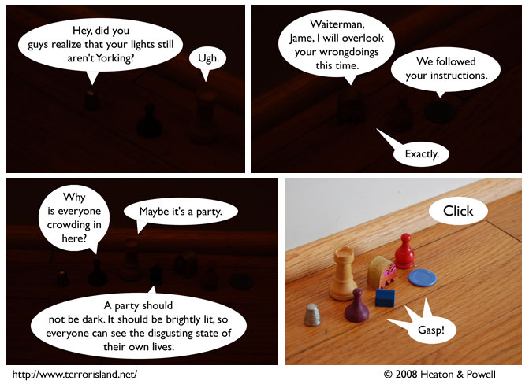

Strip #299
— Friday, May 9, 2008

Whatever’s coming up must be big for Helmut to come all the way from Target City!
Notes, Thoughts, &c.
Ben’s Notes
It’s hard to tell from the first three panels, but we’ve gone back to the borderless speech bubble style.
Lewis’s Notes
I am seriously advocating the 8 day week. Septiweekenarianism is a pretty lame plan, especially when one only has 2 days of weekend. So here’s my suggestion: Add an additional day in between Wednesday and Thursday, called, I dunno, “Funterday.” Funterday has to be a day off. Octoweekenarians unite!